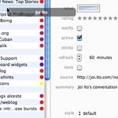

A sample set of screen captures (click to see the larger images):
-
Article viewer
The main window lists the articles. You can navigate between groups via the groups bar (using mouse or keyboard) and you can view articles as a flat list or a hierarchical list of subscriptions and articles. endo uses uniform scrolling. Using the arrow key or space bar, you can read every article without having to use the mouse.
-
Custom styles
The article's content is displayed using Apple's WebKit with customizable stylesheets.
-

Subscriptions manager
Subscriptions are highly configurable, allowing you to change refresh rate, the limit of new articles to download, the style sheet to use, the list of authors, whether notifications are made on new articles. The subscription manager also tracks how often subscriptions have been updated, which you can readily observe using the colored discs next to the names.
-

Download helper
Downloads are handled via a helper application, accessible from the menu bar. endoBot handles enclosures and torrents. It can also play movies and sounds or add them to your iTunes library.
-
Preferences
endo can be fine-tuned to the user's own preferences. This varies from adjusting how many simultaneous feed refreshes are made to the color scheme of notification windows.
-
iCal
endo reads the hCal microformat that can be embedded in article contents. When it finds one, it displays a small iCal icon to let you know you can add the event to iCal.


{kind=link}
{kind=link}
{kind=link}
{kind=link}
{kind=link}